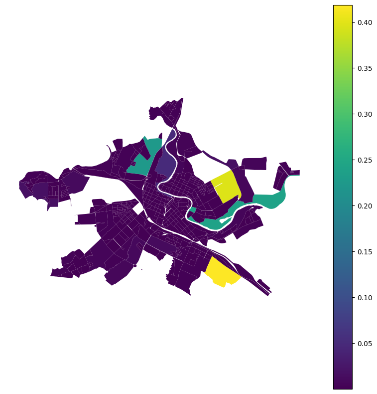

Classification
Blocks
[14]:
import geopandas as gpd
blocks = gpd.read_parquet('./../../tests/data/_blocks.parquet')[['geometry']]
blocks.head()
[14]:
| geometry | |
|---|---|
| 0 | POLYGON ((550762.29 6565038.844, 550768.857 65... |
| 1 | POLYGON ((550768.857 6565033.563, 550762.29 65... |
| 2 | POLYGON ((544937.479 6564706.592, 544935.619 6... |
| 3 | POLYGON ((544806.647 6565359.291, 544814.358 6... |
| 4 | POLYGON ((544793.346 6565395.228, 544800.15 65... |
Evaluate
[15]:
from blocksnet.machine_learning.classification import BlocksClassifier
classifier = BlocksClassifier()
[16]:
res = classifier.evaluate(blocks)
2025-05-07 19:48:58.340 | INFO | blocksnet.preprocessing.feature_engineering.core:_calculate_usual_features:35 - Calculating usual features
2025-05-07 19:48:58.367 | INFO | blocksnet.preprocessing.feature_engineering.core:_calculate_aspect_ratios:58 - Calculating aspect ratios
100%|██████████| 737/737 [00:00<00:00, 1544.46it/s]
2025-05-07 19:48:58.852 | INFO | blocksnet.preprocessing.feature_engineering.core:_calculate_centerlines:21 - Calculating centerlines
100%|██████████| 737/737 [00:03<00:00, 208.24it/s]
2025-05-07 19:49:02.397 | INFO | blocksnet.preprocessing.feature_engineering.core:_generate_combinations:68 - Generating combinations
[9]:
res['i/n'] = res['invalid'] / res['normal']
res['l/n'] = res['large'] / res['normal']
res
[9]:
| invalid | large | normal | category | probability | i/n | l/n | |
|---|---|---|---|---|---|---|---|
| id | |||||||
| 0 | 0.017405 | 0.001351 | 0.981244 | BlockCategory.NORMAL | 0.981244 | 0.017738 | 0.001377 |
| 1 | 0.637211 | 0.000143 | 0.362646 | BlockCategory.INVALID | 0.637211 | 1.757112 | 0.000394 |
| 2 | 0.008412 | 0.000726 | 0.990862 | BlockCategory.NORMAL | 0.990862 | 0.008490 | 0.000733 |
| 3 | 0.034929 | 0.000739 | 0.964332 | BlockCategory.NORMAL | 0.964332 | 0.036221 | 0.000766 |
| 4 | 0.006865 | 0.393867 | 0.599269 | BlockCategory.NORMAL | 0.599269 | 0.011455 | 0.657246 |
| ... | ... | ... | ... | ... | ... | ... | ... |
| 16315 | 0.883616 | 0.000178 | 0.116206 | BlockCategory.INVALID | 0.883616 | 7.603908 | 0.001532 |
| 16316 | 0.604627 | 0.000022 | 0.395351 | BlockCategory.INVALID | 0.604627 | 1.529344 | 0.000055 |
| 16317 | 0.967215 | 0.000053 | 0.032732 | BlockCategory.INVALID | 0.967215 | 29.549418 | 0.001614 |
| 16318 | 0.928698 | 0.000053 | 0.071249 | BlockCategory.INVALID | 0.928698 | 13.034574 | 0.000739 |
| 16319 | 0.003977 | 0.001853 | 0.994170 | BlockCategory.NORMAL | 0.994170 | 0.004000 | 0.001864 |
16320 rows × 7 columns
[22]:
from blocksnet.machine_learning.classification import BlockCategory
blocks[['geometry']].join(res[res['category'] == BlockCategory.NORMAL]).plot(column='large', legend=True, figsize=(10,10)).set_axis_off()
